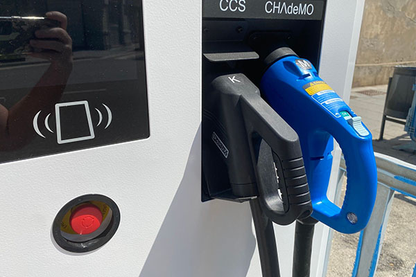

El futur de l’economia circular
La implantació d'un model d'economia circular és clau per reduir l'impacte ambiental i fomentar la sostenibilitat a llarg termini. Diverses iniciatives ja estan marcant el camí.
Moltes ciutats europees han posat en marxa projectes de reciclatge avançat, compostatge comunitari i reparació col·laborativa, contribuint de manera significativa a reduir residus.
"Adoptar l'economia circular no és només una opció intel·ligent, sinó una responsabilitat urgent per preservar el nostre planeta."
Els experts apunten que la clau de l'èxit radica en la implicació activa de la societat civil i les empreses locals en la transformació del model productiu.
- Reciclatge de materials electrònics
- Producció de bioplàstics a partir de residus orgànics
- Mercats d'intercanvi i reutilització

Amb una combinació d'innovació, educació i polítiques públiques adequades, l'economia circular pot convertir-se en el motor d'un futur més net i just per a tothom.